来源：https://fqlleg2dnfa.feishu.cn/docx/IExqdkEOYoyLvKx9idYcOvYknUg
目前实践应用于电商&小红书&公众号领域，有需要可深度线下交流。V：zhuhou-xi
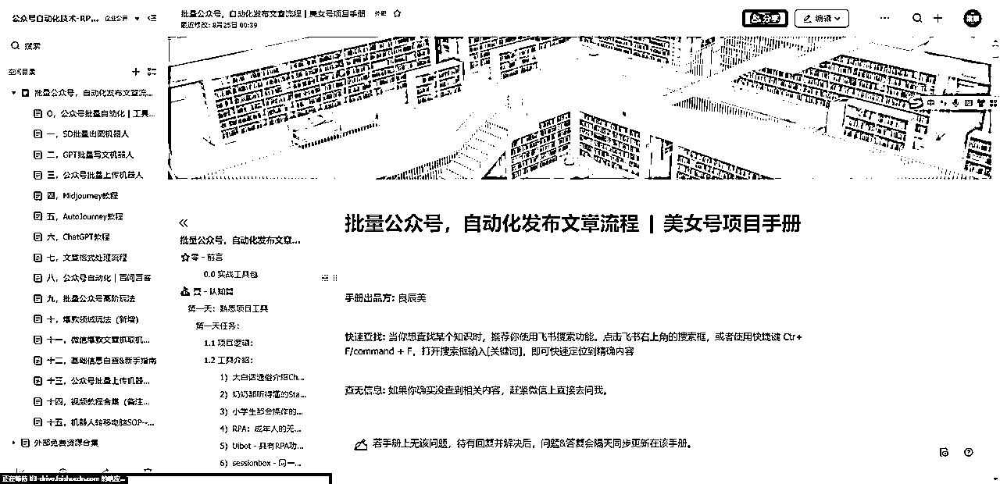
机器人写完内容后，如暂停机器人再开启，则需要先剪切完前面GPT输出的内容。
GPT批量写文机器人是一种基于OpenAI的GPT（Generative Pretrained Transformer）模型开发的自然语言处理工具，其目标是生成高质量、连贯、有深度的文本内容。该机器人利用了大规模预训练语言模型的优点，能够理解和生成自然语言文本，使其成为一种强大的写作工具。
GPT批量写文机器人能够在多种场景中派上用场，包括但不限于内容创作、文章生成、自动回复、编程帮助、教育辅导等。用户可以提供简单的提示或特定的问题，机器人会根据其训练数据和算法逻辑，生成一篇或多篇满足用户需求的文章。批量写作功能使其在面对大规模文本生成需求时，能够提供有效且高效的解决方案。
通过预先调整好的Prompt，两次发送时获取两次的GPT输出结果。
输入的PROMPT分别在表格的SHEET1工作簿，输出的结果分别SHEET2的工作簿。
用户可自行调整PROMPT的内容，和向GPT发送的次数。
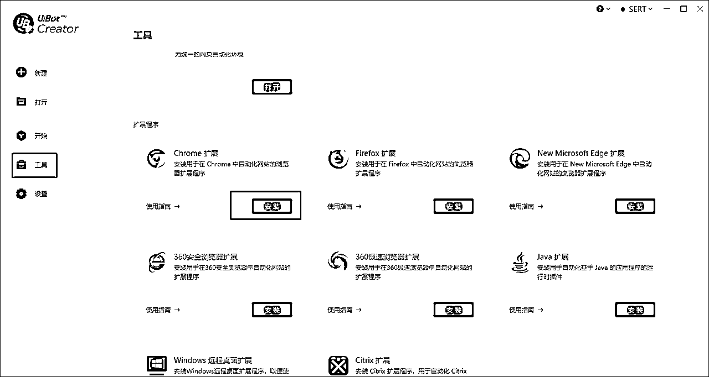
点击打开
选择对应文件夹
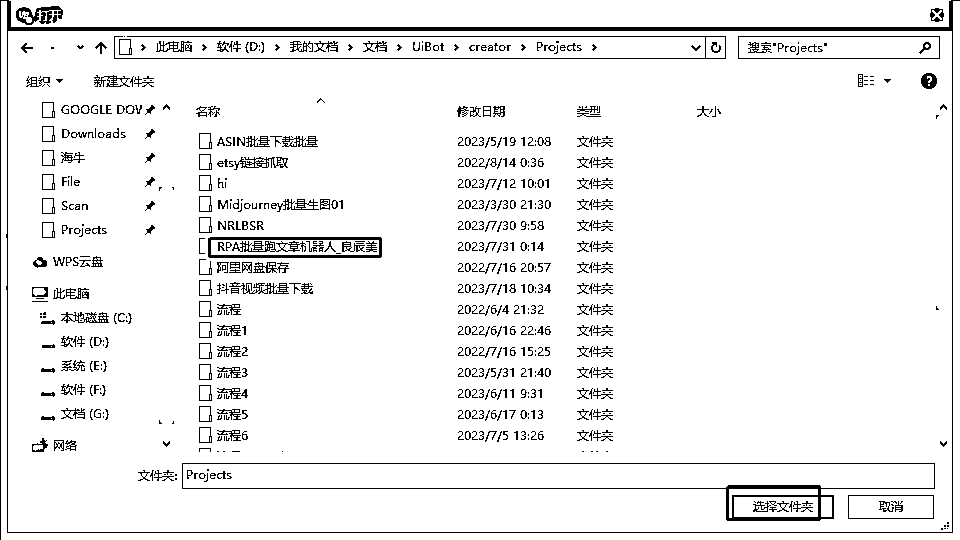
点击运行，请注意，务必保留ChatGPT浏览器页面打开登录状态
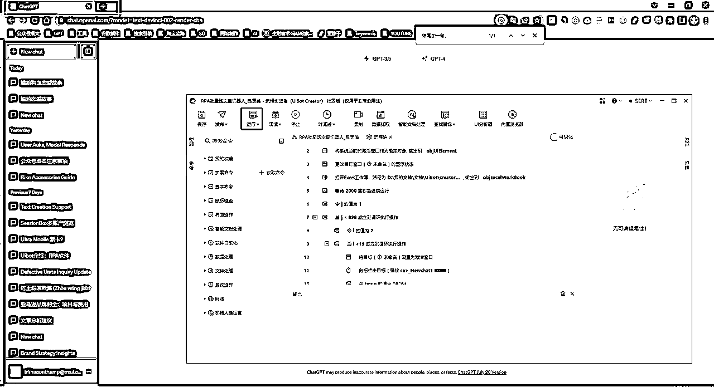
由于PROMPT提示语较长，可能需要页面缩放80%，以获得页面的复制按钮。
修改这个数字即可改变循环重复次数
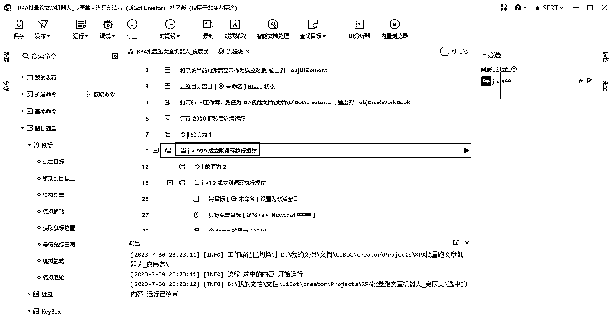
机器人通过“结尾加一句”来识别到第二次GPT输出的复制按钮位置，因此如果改动了prompt2，该识别语句需要同步修改即可
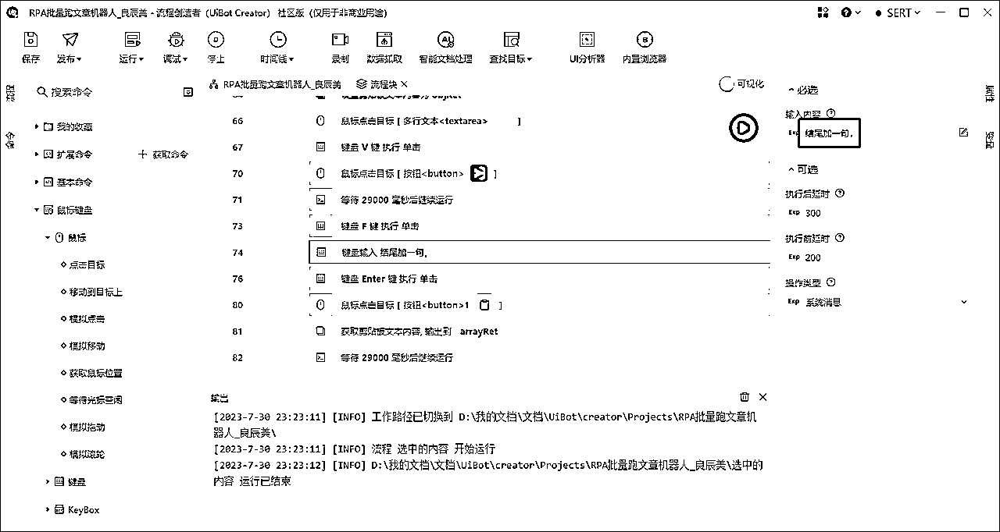
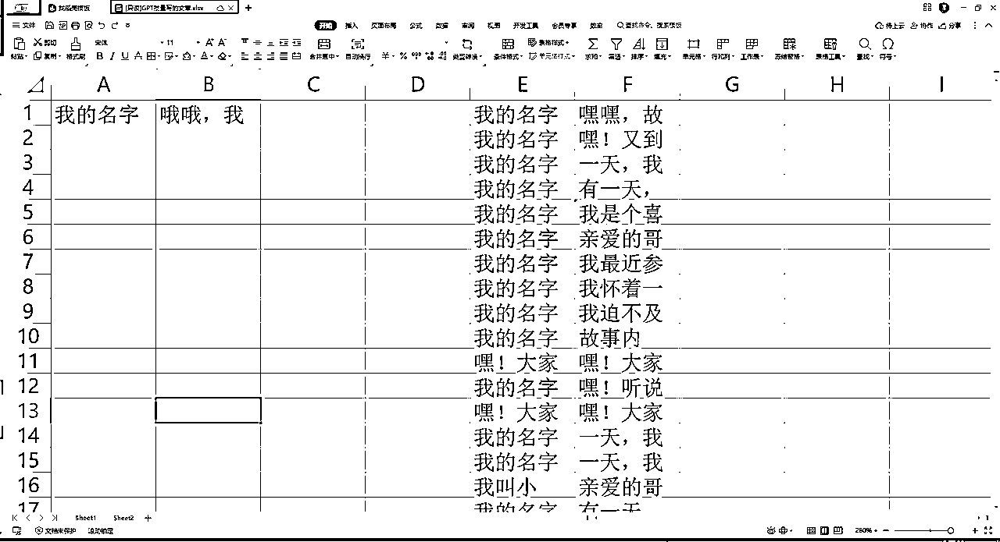
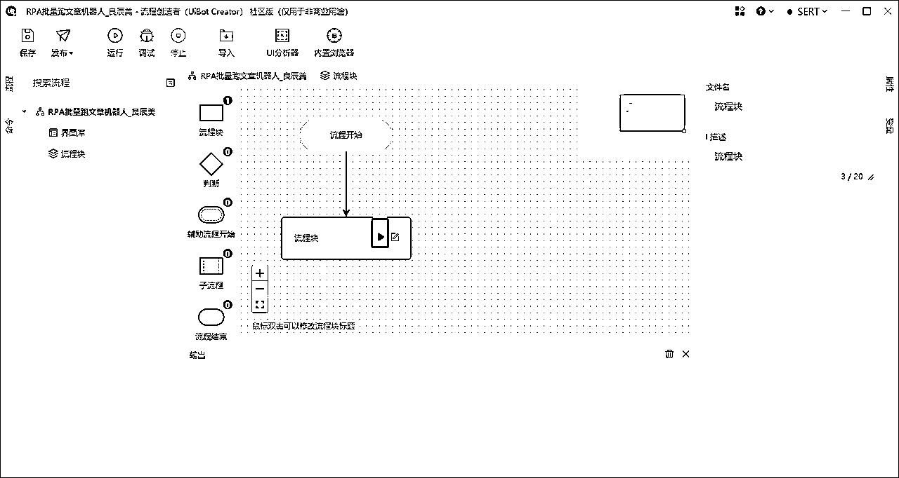
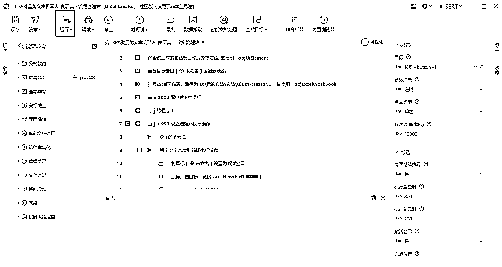
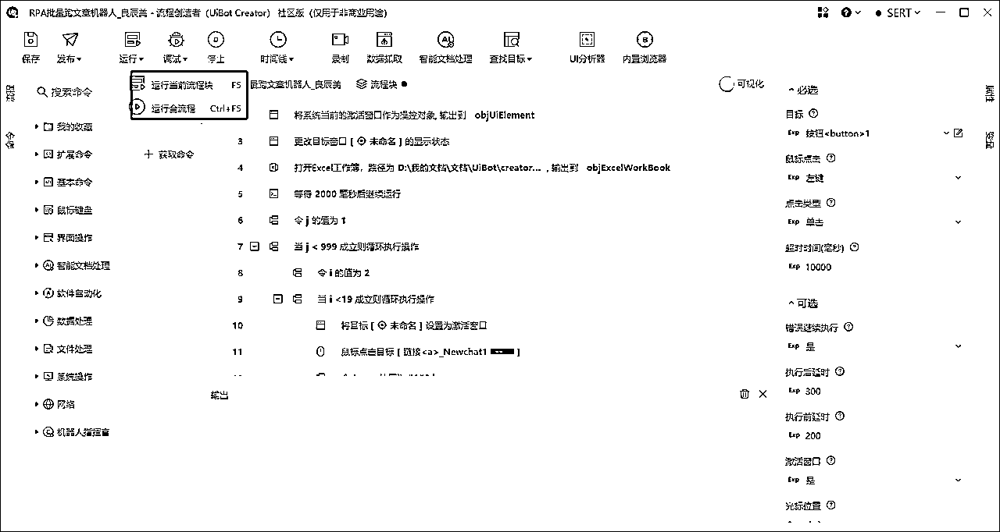
如果报错，运行路径不存在，则按照如下调整：
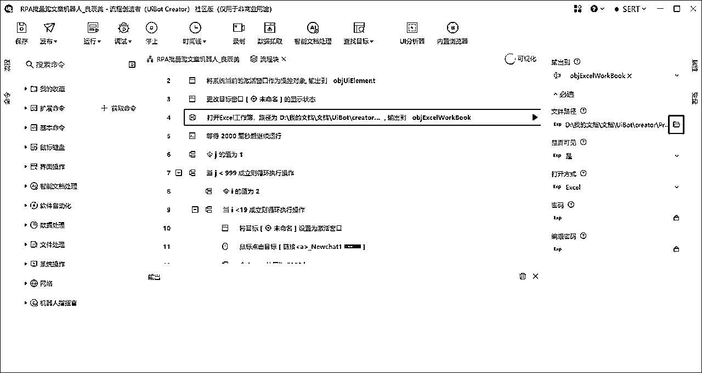
请注意，GPT不要使用ARPM的插件，否则会影响复制内容
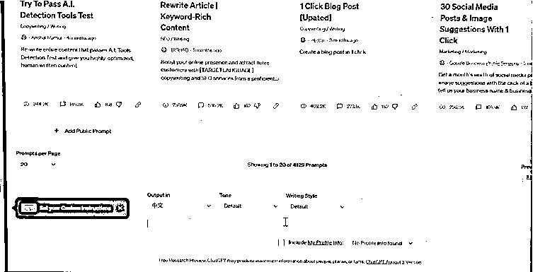
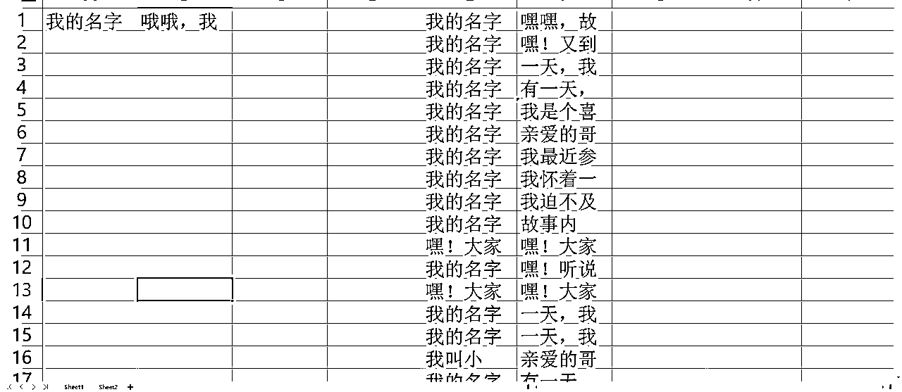
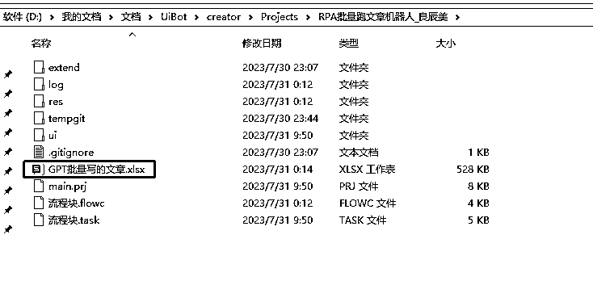
sheet1初始状态是空白，
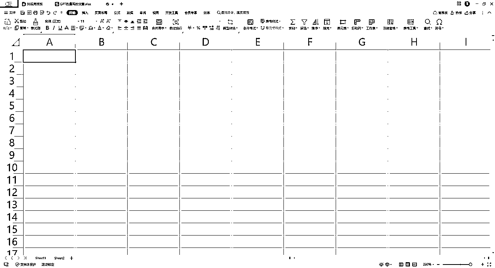
sheet2是prompt语句，2-20列循环使用，可以替换为你的Prompt，但请勿删除
机器人会依次在Sheet1空白表格工作簿写入GPT输出内容
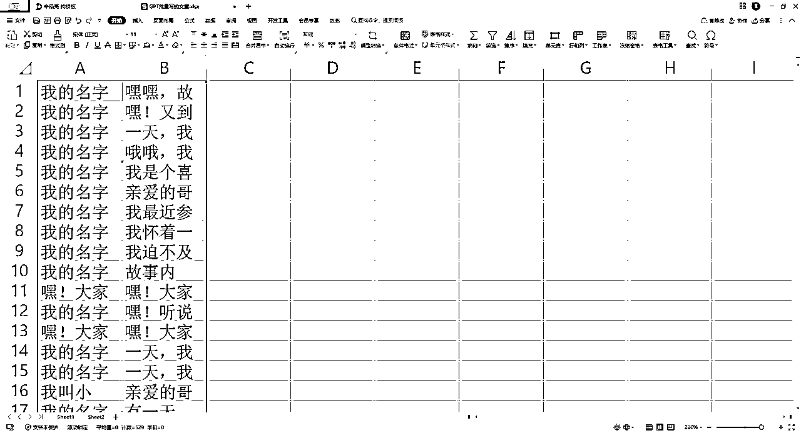
提供出错截图，请务必全部界面截图，包含以下三部分
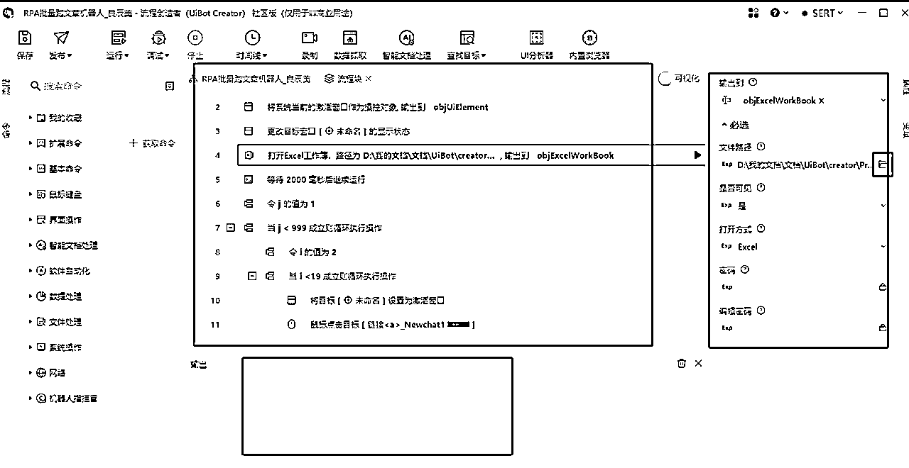
请先确保GPT运行正常，浏览器页面处于GPT页面时点击RPA的运行机器人
这种情况都是GPT出错。
剪切走SHEET1的输出内容，保持空白界面再开启下一轮下机器人循环，或者保持机器人长期运行，把循环数字修改为99999